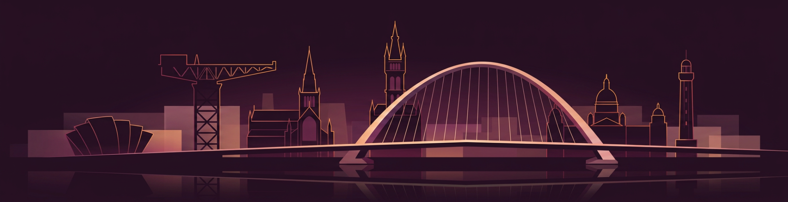
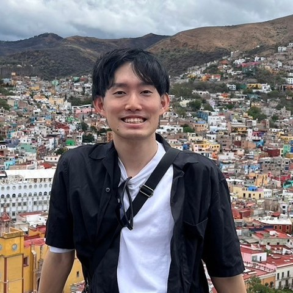
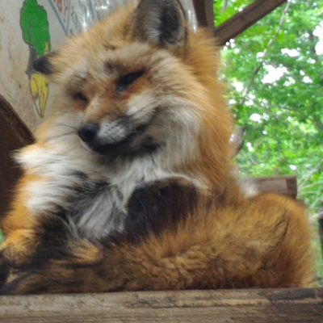
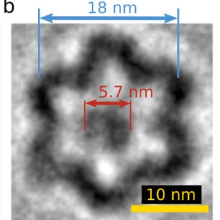
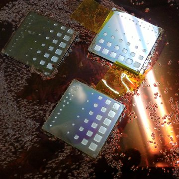
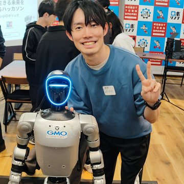
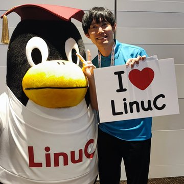
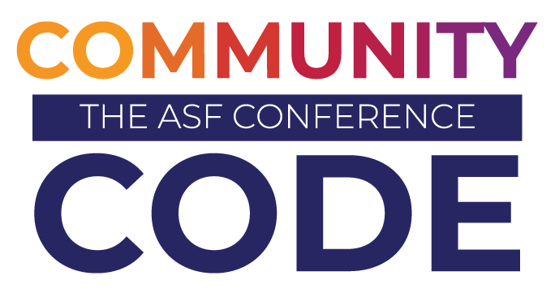

OTFSG Tokyo · Community Over Code Glasgow 2026
渡航支援制度（TAC）を利用して登壇した
Community Over Code Glasgow 2026 体験記
Satoru AkitaSony Semiconductor Solutions

自己紹介

秋田 賢（Satoru Akita）。ソニーセミコンダクタソリューションズでエッジAI（カメラなどの機器側でAI処理を行う技術）に関わるエンジニア。仕事ではApache NuttXをアプリケーション側から使っています。

これまでの活動




本業とは別に、個人でOSS（Open Source Software）の活動をしています。

Glasgow, ScotlandASFの国際カンファレンス
GSoC不採択から、CfP採択まで
費用の壁・制度の中身・申請後の流れ・運営協力
日程・聴講・ハッカソン
WireGuard for Apache NuttX
参加を考えている方へ
Community Over Code
| 項目 | 今回の開催概要 |
|---|---|
| イベント | Community Over Code Glasgow 2026 |
| 会期 | 2026年10月11日（日）〜14日（水） |
| 開催地 | イギリス・スコットランド、グラスゴー |
| 会場 | Hilton Glasgow |
| 主催 | Apache Software Foundation（ASF） |

ApacheCon。2023年に現在の名称へ
データ処理・検索・クラウド・IoT・組込みなど、幅広いプロジェクト
トラック別の講演、ハッカソン、BoF（有志の話し合い）
ASFは「個人」のコミュニティ
財団の会員は企業ではなく個人。企業のスポンサー支援と、プロジェクトでの個人の役割は分けられている。
継続的な貢献に基づいて、ソースコードの変更をリポジトリに反映する権限を持つ人。
Project Management Committee。プロジェクトの運営やリリースの承認を担う委員会。
コントリビューター → コミッター → PMCメンバー
貢献を積み重ねて、役割が広がっていく道筋がある。Linux Foundation系との違い：どちらが企業向け・個人向けと単純に分けられるものではない。何を中心に人が集まり、どう支えているかで見ると分かりやすい。
登壇までの道のり
Google Summer of Codeに初めて応募しましたが、採択されませんでした。
アイデアを調べ、GitHub上で相談しながら提案をまとめました。
Sonyの同僚で、NuttXコミュニティのAlin Jerpeleaさん。CfPへの応募を勧められ、応募しました。
GSoCはまた不採択。でも登壇が決まったので、個人で開発を続けました。
渡航費用の支援が決まりました。
アプリ版を作り、カーネルドライバ版へ。
初めての海外ソフトウェアカンファレンスでの登壇。
不採択
採択 → 登壇
採択 → 費用の支援
一つ落ちても、別の入口が開いた。
つながったのは、なぜか
提案の準備や相談を、GitHub上で進めていた。見つけてもらえる状態だった。
同じSonyグループで、仕事でも少し接点があった。会社のチャットで連絡をもらえた。
CfPという具体的な入口を、人が教えてくれた。
GSoCは不採択。でも、そこで終わらなかった。
応募し、公開の場で相談し、人に声をかけてもらえたことが重なって、入口に立てた。結果が不採択でも、公開で動いた記録が次のきっかけになる。
次の壁：費用
登壇は決まった。でも、グラスゴーまでの費用を、個人で払えるか。
約50万円
当時の見積もり
約20万円
一泊3万円程度として、滞在全体で
なし
不採択だったので
発表の機会があっても、費用で諦める人は多いはず。そこで応募したのがTAC。
TACとは
Travel Assistance Committee。経済的な理由で参加が難しい人に、ASFのイベントへの参加を支援する仕組み。
出典：Apache TAC 公式の案内
応募と審査
オンラインで申請。申請内容に基づいて審査される。
参加が本人にとってだけでなく、ASFやOSS全体にどんな意味を持つか。
居住地に近いイベントが一般に優先される。遠方でも、参加する理由は考慮される。
登壇者であることは、強い「参加する理由」になる。
私の場合は、CfPが採択されていたことが、申請内容の軸になりました。注意：採択の基準や結果は回によって変わります。応募前に必ず公式の案内を読んでください。
採択のあとの流れ
手続きは基本メール。航空券や宿は、希望を伝えれば手配してもらえる。
見返りは、運営協力
支援を受ける参加者は、イベントの運営に協力する。例：設営、受付、セッションの補助、撤収。
録画は、基本的に開始ボタンと停止ボタンを押すだけ。
日本でカンファレンスのボランティアを経験していたので、仕事の違いは大きくなかった。今回は担当量が比較的少なく、登壇・聴講・交流と両立できた。担当は回や割り当てで変わる。現地での5日間
| 日付 | 主な行動 |
|---|---|
| 10/9（金） | 羽田を出発。ロンドン経由でグラスゴーへ |
| 10/10（土） | TACの集合・運営説明、Tシャツ受け取り、会場準備、交流 |
| 10/11（日） | カンファレンス初日。Airflow、StreamPipesなどの講演を聴講 |
| 10/12（月） | AI時代のOSS教育、Arrow／Parquetのファジングなどの講演を聴講 |
| 10/13（火） | WireGuard移植について登壇。NuttX関連の講演を聴講 |
| 10/14（水） | NuttXハッカソン、講演の録画・スピーカー支援。Tika、Lucene関連の講演 |
| 10/15–16 | エディンバラから帰国。16日に羽田着 |
現地の様子
会場の準備。机やバナーの設置を手伝いました。
TACの参加者と。Tシャツを着て運営を支えました。
10月13日、初めての海外ソフトウェアカンファレンスでの登壇。
聴いた講演（一部）
処理の流れを管理するAirflowに、AIエージェントを組み込む。実行状況の把握と、人による確認・判断の仕組み。
センサーや機械のデータを取り込み、加工・可視化する産業IoT基盤。
AIが使える時代に、OSSへの参加をどう教えるか。「暗黙知」と「すべてのソフトウェアは社会的」。
6年間、多様な入力で不具合を探し続けた取り組み。活動の継続と資金の話も。
飛行データの記録やパラシュート展開をNuttXで実装した事例。
ファイルから情報を取り出すTikaと、ベクトル検索を高速化するLucene。
同じApacheの中に、これだけ違う分野が並ぶ。どのソフトウェアの裏にも、続けている人たちがいる。
発表内容：WireGuard for NuttX
マイコンなど組込み機器で使われるリアルタイムOS。
暗号化された通信経路をつくる軽量なVPN。
遠隔の組込み機器へ、安全に接続する。
開発：2つのバージョン
既存のWireGuard実装（wireguard-lwip）を活用した、アプリケーション側の実装。最初のトンネルが動いた。
NuttXのカーネルドライバとして統合。アプリではなくOSの一部に。
ESP32-S3、Spresense、QEMUで動作を確認。
つまずき：ソケットの扱い（EBADF）、暗号のnonce、カーネルのスタック消費。詳しくはGitHubへ。ライブデモでは、Stack-chan（ロボット）をVPN越しに操作しました。
AIと一緒に作る
Claudeを、かなり使いました。
調査もコードも速くなった。一方で、組込みOSの中身は初めてで、AIの書いたコードをそのまま信じることはできなかった。分からないところをAIに聞く。
NuttXのコードを自分で読む。
挙動をテストして、説明できるまで。
AIはコードを書く手伝いをしてくれる。理解は、自分の仕事だった。
参加して得た学び
国を越えたコミュニティと、それを支える役割や制度がある。現地で、その枠組みを少し実感できた。
目の前の仕事だけでは、なかなか見つからない入口がある。応募して、公開の場で相談して、声をかけてもらえた。
オンラインで見ていたコミュニティが、同じ場所で話す人たちとして見えるようになった。
最初から大きな実績はいらない
これから
継続して関わり、貢献を積み重ねたい。
その先で、コミッターやPMCメンバーの役割も担えるようになれたら。WireGuardのupstreamへの提出とレビュー。ハッカソンやコミュニティでの活動。
日本から世界のコミュニティに参加する人が増えれば、日本の存在感にもつながる。この経験が、次に挑戦する人のきっかけになれば。
OTFSG Tokyo · Community Over Code Glasgow 2026
ご清聴ありがとうございました。
Alin Jerpeleaさん／Apache NuttXコミュニティ／TAC／Community Over Codeの運営・スポンサー・現地で交流してくださった皆さん／OTFSG Tokyoの皆さん
Satoru Akita · Sony Semiconductor Solutions